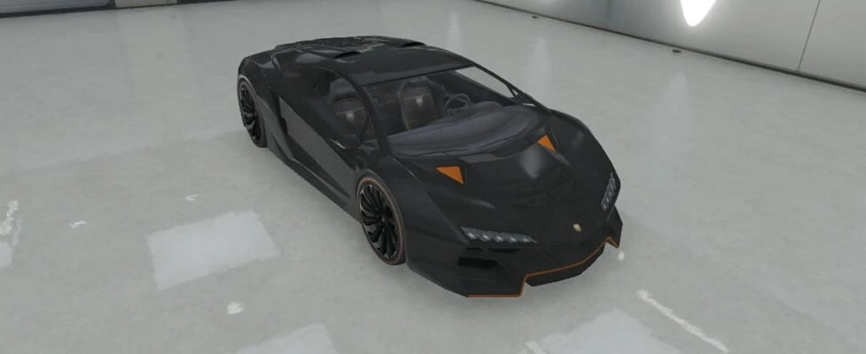

El Zentorno es un vehículo, tipo superdeportivo que aparece en Grand Theft Auto V, como parte de la actualización Alta Sociedad. Es fabricado por Pegassi. Es un superdeportivo con un diseño muy agresivo, con líneas muy rectas, pero a la vez, aerodinámicas. Su velocidad es comparable con la del Entity XF, pero acelera como el Adder. Al igual que el Infernus sus puertas se abren tipo "tijera".